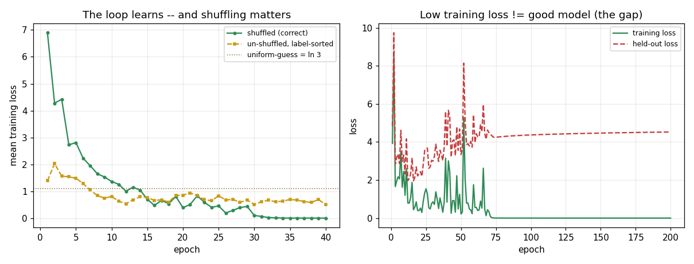

The mini-batch loop: why a falling training loss is evidence of an optimizer, not a model
Day 2 produced a corrector — a forward pass that guesses, a backward pass that hands back one gradient per weight. That was a single correction on a single batch. The engineering content of Day 3 is small to state and large in consequence: put that correction inside a loop over the data, and for the first time the training loss *moves*. The interesting claim for a staff-level reader is not "the loss falls" — it is that a falling training loss is a fact about the *optimizer*, and says almost nothing about the *model*. This note builds a real NumPy mini-batch loop (no autograd, no framework), drives the training loss down, and then breaks it three ways to show what the loss curve does and does not license you to conclude. Every number below comes from experiment.py, seeded, float64, on a 3-class problem with heavily overlapping clouds (mean spread 1.0, noise std 3.0) so the loss cannot trivially collapse to zero.
The mechanism: four steps on repeat, over shuffled slices
The loop reuses the Day 1-2 forward and backward passes verbatim. The only new code is the control flow around them:
for epoch in range(epochs):
idx = rng.permutation(N) # shuffle the INDICES every epoch
for start in range(0, N, batch_size): # slice into consecutive chunks
b = idx[start:start+batch_size] # this batch (the LAST one may be ragged)
loss, cache = forward(p, X[b], Y[b]) # guess
grads = backward(p, X[b], Y[b], cache, "mean") # which way (averaged)
p = p - lr * grads # one step
The vocabulary is exact arithmetic, not hand-waving. For the lesson's canonical case, N = 60,000, batch_size = 32 gives 60,000 // 32 = 1,875 iterations per epoch, and it divides evenly. This experiment deliberately uses a size that does *not* divide evenly:
this run : N=1000, batch_size=32 -> 31 full batches + 1 ragged batch of 8 = 32 iterations/epoch
batch sizes sum back to N : 1000 == 1000 -> OK (leftovers still train)
The ragged final batch of 8 is the wrinkle worth naming: a loop that hard-codes batch_size anywhere (a reshape to (32, ...), a divide by a literal 32) either crashes or silently computes wrong numbers on that last short batch. The 31 full + 1 ragged of 8 = 32 sizes summing back to exactly 1000 is the check that the leftovers are not dropped.
Run the loop and the training loss falls hard. The per-batch loss inside a single epoch is bumpy (that is the mini-batch gradient noise — min=2.478, max=13.625 in epoch 1 alone), but the per-epoch mean trends cleanly down:
From 6.8972 to 0.0025 — a drop of 6.8947, and far below the uniform-guess baseline of ln 3 = 1.0986. That is the first live proof the whole Day 1-2 machinery connects and learns. It is also the last honest thing the training loss tells you on its own.
Failure mode 1: forgetting to shuffle sorted data — silent, no crash
Sort the data by label (000...111...222) and run the identical optimizer with shuffle=False. Nothing throws. But now every batch of 32 is almost entirely one class, so consecutive batches yank the weights toward one class and then another. The signal is real and measurable:
final training loss shuffled=0.0025 un-shuffled(sorted)=0.4971
within-epoch-1 batch-loss swing (max-min) shuffled=11.147 un-shuffled(sorted)=18.133
The sorted run's within-epoch batch loss swings wider (18.133 vs 11.147 in epoch 1 — single-class batches whipsaw the weights), and it settles at a final training loss of 0.4971 against the shuffled run's 0.0025 — 196x higher, with no exception, no NaN, no shape error. This is the canonical *silent* bug: a suspiciously jerky loss on data that happens to be sorted is a data-ordering smell, not a learning-rate problem. The fix is to shuffle the indices every epoch — not to fiddle with the step size. A staff engineer who reaches for lr first here wastes hours; the tell is that the loss is jerky *and* the data was never shuffled.
Failure mode 2: summing the batch gradient makes batch_size a hidden lr
When you reduce the per-example loss and gradient over a batch, you take the mean, not the sum. This is a one-word change in code (/ B versus / 1) and a large change in behavior, because it couples the effective step size to batch_size. Summing makes the gradient roughly batch_size times larger, so at the same nominal learning rate the *real* step is ~32x too big:
With the mean, lr = 0.1 converges (6.897 -> 2.811 over five epochs). With the sum — same lr, same data, same seed — the loss *diverges* and sticks around 17, because the effective step overshoots the valley every time. The consequence for the engineer: if you sum, your learning rate silently becomes a function of your batch size, so the moment you change batch_size (say to fit memory) your previously-tuned lr breaks. Taking the mean keeps lr a clean, orthogonal knob you can tune once and reuse across batch sizes. That decoupling is the entire reason the convention exists.
Design trade-off: the batch_size dial — noise versus frequency versus memory
batch_size is the dial that sets where you sit between the two ancestors of mini-batch descent. Full-batch (all N) gives an exact, smooth gradient but only *one* update per pass over the data — on 60,000 images that is one step per epoch, and it must hold all N examples' activations in memory at once. Single-example SGD (batch_size = 1) updates N times per epoch but each gradient is a noisy one-example estimate. Mini-batch averages a handful: in this run, 32 examples of evidence per step instead of 1, which is why the per-epoch mean trends down smoothly even though the per-batch loss swings between 2.478 and 13.625.
The trade-off has a sharp edge that the noise is not purely a cost: small batches give a shakier gradient *and often generalize better*, because the jitter knocks weights out of sharp minima. Large batches give a smoother, more accurate gradient but fewer updates per epoch and higher memory. In practice 32-256 is the sweet spot. The important staff-level point is that batch_size and lr are coupled through the reduction: only because we take the *mean* can we treat them as separable at all.
The ceiling: a low training loss is not a good model
Here is the claim that matters most, and the one the loss curve cannot make on its own. Train the same architecture longer (200 epochs, a wide 256-unit hidden layer, only 1000 training points) and then measure the loss on 4000 held-out points drawn from the *same distribution* the model never trained on:
TRAINING loss (data it practiced on) = 0.0003
HELD-OUT loss (data it never saw) = 4.5263
gap (held-out - train) = +4.5260
The loop did exactly what a loop does: it drove the training loss to 0.0003, essentially zero. And the model is 17,732x worse on unseen data. The mini-batch loop is an *optimization procedure* — a machine for driving the training loss down — and that is *all* it is. A perfectly-wired loop with a near-zero training loss can be a badly overfit model that memorized 1000 noisy points. The training loss alone gives you no way to tell the difference; both a great model and a memorizing one show a falling training loss. The +4.5260 gap is invisible until you hold out data and measure it. This is why "our training loss is going down" is not a claim that survives a design review, and why the very next step is a train/validation split.
What this evidence shows and does not show
It shows a from-scratch mini-batch loop drives the training loss 6.8972 -> 0.0025 (it learns); that dropping the shuffle on sorted data silently costs 196x in final training loss with no crash; that summing instead of averaging the gradient turns a converging run (-> 2.811) into a diverging one (~17) at the same lr; and that a training loss of 0.0003 coexists with a held-out loss of 4.5263 — the overfitting gap the loop is blind to. It does *not* show how to close that gap: measuring generalization needs the held-out split, and shrinking it needs regularization (dropout, weight decay) — both of which belong to the training-loop days that follow. The habit to carry forward is the discipline of distrust: a falling training loss earns you the right to believe your loop is wired, and nothing more.

Reproducible experiment
experiment.py
#!/usr/bin/env python3
"""
Evidence for M5 Day 3 — "The Mini-Batch Training Loop".
ONE concrete claim, made falsifiable:
Wrapping the Day 1-2 forward+backward MLP inside a mini-batch loop -- shuffle,
slice into batches of `batch_size` (incl. the ragged final batch), average the
gradient over each batch, take one step -- makes the TRAINING loss actually
fall. But a falling training loss is an optimization fact, NOT a proof the
model is good: the SAME run, measured on held-out data, tells a different
story (the train/held-out gap = overfitting).
We back it up four ways, all from a real NumPy MLP (no autograd, no framework):
(1) The vocabulary arithmetic is real: iterations_per_epoch = ceil(N/batch),
and with a ragged final batch the batch sizes sum back to exactly N.
(2) Shuffled mini-batch loop: per-epoch mean training loss trends DOWN.
(3) Un-shuffled, label-sorted loop: SAME optimizer, SAME data -- but each
batch is one class, so it learns worse (higher final loss, jerkier).
(4) Mean-vs-sum: summing the batch gradient silently scales the step with
batch_size (a 32x-too-large step here) -> the loss diverges, while the
mean keeps the same learning rate working. batch_size is NOT a step-size.
Then the ceiling: the shuffled model's TRAINING loss falls far below its
HELD-OUT loss -- low training loss did not buy generalization.
Self-contained script (NOT a notebook), so savefig() into assets/ is allowed.
Everything is seeded, so the printed numbers are reproducible. float64 so the
losses are not swamped by float32 round-off.
"""
import os
import math
import numpy as np
import matplotlib
matplotlib.use("Agg") # headless backend -- no display in the sandbox
import matplotlib.pyplot as plt
RNG = np.random.default_rng(0) # seed everything so the run is reproducible
HERE = os.path.dirname(os.path.abspath(__file__))
ASSETS = os.path.join(HERE, "assets")
os.makedirs(ASSETS, exist_ok=True)
# ---------------------------------------------------------------------------
# A small, real classification task the loop can learn but NOT perfectly: the
# class clouds OVERLAP heavily (noise ~ 3x the class-mean spread), so the Bayes
# floor is well above zero. This matters -- if the task were trivially separable
# the loss would collapse to 0 and every failure mode below would be invisible.
# Small train set + wide net => the model can memorize the train points and open
# a real train/held-out gap (the c8 ceiling).
# N_TRAIN is deliberately NOT a multiple of batch_size (=> ragged final batch).
# ---------------------------------------------------------------------------
N_IN, N_HID, N_OUT = 20, 256, 3
N_TRAIN = 1000 # 1000 / 32 = 31 full batches + a ragged batch of 8
N_HELD = 4000 # large held-out set for a stable generalization estimate
# One shared data-generating process for train + held-out (same distribution).
# Overlapping clouds: mean spread 1.0, noise std 3.0 -> classes bleed together.
_DATA_RNG = np.random.default_rng(1)
_MEANS = _DATA_RNG.standard_normal((N_OUT, N_IN)) * 1.0
def sample(n, rng):
y = rng.integers(0, N_OUT, size=n)
x = _MEANS[y] + rng.standard_normal((n, N_IN)) * 3.0 # heavy overlap
y_oh = np.zeros((n, N_OUT))
y_oh[np.arange(n), y] = 1.0
return x, y, y_oh
Xtr, ytr, Ytr = sample(N_TRAIN, np.random.default_rng(2))
Xho, yho, Yho = sample(N_HELD, np.random.default_rng(3))
# ---------------------------------------------------------------------------
# The Day 1-2 MLP: forward pass (cached), analytic backward pass. Unchanged.
# ---------------------------------------------------------------------------
def init_params(rng):
return {
"W1": rng.standard_normal((N_IN, N_HID)) * math.sqrt(2.0 / N_IN), # He init
"b1": np.zeros(N_HID),
"W2": rng.standard_normal((N_HID, N_OUT)) * math.sqrt(2.0 / N_HID),
"b2": np.zeros(N_OUT),
}
def softmax(z):
z = z - z.max(axis=1, keepdims=True) # subtract max for stability
e = np.exp(z)
return e / e.sum(axis=1, keepdims=True)
def forward(p, x, y_oh):
z1 = x @ p["W1"] + p["b1"] # (B, N_HID) pre-activation
h = np.maximum(0.0, z1) # ReLU hidden activations
logits = h @ p["W2"] + p["b2"] # (B, N_OUT) class scores
probs = softmax(logits)
# MEAN cross-entropy over the batch: the average, not the sum (see reduce=)
loss = -np.mean(np.sum(y_oh * np.log(probs + 1e-12), axis=1))
return loss, (z1, h, probs)
def backward(p, x, y_oh, cache, reduce="mean"):
"""Analytic gradient. reduce='mean' divides by B (the correct, batch-size-
independent step). reduce='sum' does NOT -- the gradient then grows with the
batch, silently scaling the effective step size (the c6 failure mode)."""
z1, h, probs = cache
B = x.shape[0]
denom = B if reduce == "mean" else 1 # <-- mean vs sum is this one line
dlogits = (probs - y_oh) / denom # (B, N_OUT)
dW2 = h.T @ dlogits
db2 = dlogits.sum(axis=0)
dh = dlogits @ p["W2"].T
dz1 = dh * (z1 > 0) # ReLU gate (Day 2)
dW1 = x.T @ dz1
db1 = dz1.sum(axis=0)
return {"W1": dW1, "b1": db1, "W2": dW2, "b2": db2}
def sgd_step(p, grads, lr):
for k in p:
p[k] = p[k] - lr * grads[k] # param = param - lr * grad
# ---------------------------------------------------------------------------
# The mini-batch training loop -- the whole point of today.
# ---------------------------------------------------------------------------
def train(X, Y, epochs, batch_size, lr, shuffle=True, reduce="mean", seed=10):
"""Returns (params, per_epoch_mean_loss, per_batch_loss_first_epoch)."""
p = init_params(np.random.default_rng(seed))
n = X.shape[0]
epoch_losses, first_epoch_batch_losses = [], []
rng = np.random.default_rng(seed + 100)
for e in range(epochs):
# shuffle the INDICES at the start of every epoch (or don't, for contrast)
idx = rng.permutation(n) if shuffle else np.arange(n)
batch_losses = []
# slice into consecutive chunks of batch_size -- the LAST one may be ragged
for start in range(0, n, batch_size):
b = idx[start:start + batch_size] # this batch's indices
xb, yb = X[b], Y[b]
loss, cache = forward(p, xb, yb) # forward: guess
grads = backward(p, xb, yb, cache, reduce=reduce) # backward: which way
sgd_step(p, grads, lr) # update: one step
batch_losses.append(loss)
epoch_losses.append(float(np.mean(batch_losses)))
if e == 0:
first_epoch_batch_losses = batch_losses
return p, epoch_losses, first_epoch_batch_losses
def eval_loss(p, X, Y):
return float(forward(p, X, Y)[0])
# ===========================================================================
# (1) The vocabulary is real arithmetic, including the ragged final batch.
# ===========================================================================
BATCH = 32
print("=" * 70)
print("(1) VOCABULARY (epoch / iteration / batch / batch_size)")
print("=" * 70)
# Textbook case from the lesson: N = 60,000, batch_size = 32.
N_LESSON = 60_000
iters_lesson = N_LESSON // BATCH
print(f"lesson case : N={N_LESSON:,}, batch_size={BATCH} "
f"-> iterations/epoch = {N_LESSON:,}//{BATCH} = {iters_lesson:,} "
f"(exact: {N_LESSON % BATCH == 0})")
# This experiment's data: N is NOT divisible by 32 -> a ragged final batch.
full = N_TRAIN // BATCH
ragged = N_TRAIN % BATCH
iters_here = math.ceil(N_TRAIN / BATCH)
sizes = [BATCH] * full + ([ragged] if ragged else [])
print(f"this run : N={N_TRAIN}, batch_size={BATCH} "
f"-> {full} full batches + 1 ragged batch of {ragged} "
f"= {iters_here} iterations/epoch")
print(f"batch sizes sum back to N : {sum(sizes)} == {N_TRAIN} "
f"-> {'OK (leftovers still train)' if sum(sizes) == N_TRAIN else 'MISMATCH'}")
print()
# ===========================================================================
# (2) Shuffled mini-batch loop: the training loss actually falls.
# ===========================================================================
EPOCHS, LR = 40, 0.1
print("=" * 70)
print("(2) SHUFFLED mini-batch loop -- does the training loss fall?")
print("=" * 70)
p_shuf, loss_shuf, batch0 = train(Xtr, Ytr, EPOCHS, BATCH, LR, shuffle=True)
print(f"per-batch loss WITHIN epoch 1 is bumpy: "
f"first 5 = {[round(v, 3) for v in batch0[:5]]}, "
f"min={min(batch0):.3f}, max={max(batch0):.3f}")
print(f"per-EPOCH mean training loss (should trend down):")
for e in [0, 4, 9, 19, EPOCHS - 1]:
print(f" epoch {e + 1:>2}: {loss_shuf[e]:.4f}")
print(f"loss[0]={loss_shuf[0]:.4f} -> loss[-1]={loss_shuf[-1]:.4f} "
f"(dropped {loss_shuf[0] - loss_shuf[-1]:.4f}; "
f"{'TRENDS DOWN' if loss_shuf[-1] < loss_shuf[0] else 'DID NOT FALL'})")
print(f"uniform-guess baseline = ln({N_OUT}) = {math.log(N_OUT):.4f} "
f"(final loss is {'below' if loss_shuf[-1] < math.log(N_OUT) else 'above'} it)")
print()
# ===========================================================================
# (3) Un-shuffled, label-sorted data: SAME optimizer learns worse. (c5)
# ===========================================================================
print("=" * 70)
print("(3) NO SHUFFLE on LABEL-SORTED data -- silent failure, no crash")
print("=" * 70)
order = np.argsort(ytr, kind="stable") # sort by label: 000..111..222
Xsorted, Ysorted = Xtr[order], Ytr[order]
p_sorted, loss_sorted, batch0_sorted = train(
Xsorted, Ysorted, EPOCHS, BATCH, LR, shuffle=False)
# within-epoch-1 swing: sorted batches are single-class, so batch loss whipsaws
swing_shuf = max(batch0) - min(batch0)
swing_sorted = max(batch0_sorted) - min(batch0_sorted)
print(f"final training loss shuffled={loss_shuf[-1]:.4f} "
f"un-shuffled(sorted)={loss_sorted[-1]:.4f}")
print(f"within-epoch-1 batch-loss swing (max-min) "
f"shuffled={swing_shuf:.3f} un-shuffled(sorted)={swing_sorted:.3f}")
print(f"nothing crashed -- the sorted run just LEARNS WORSE: final training loss "
f"{loss_sorted[-1] - loss_shuf[-1]:+.4f} vs shuffled "
f"({loss_sorted[-1] / max(loss_shuf[-1], 1e-9):.0f}x higher).")
print()
# ===========================================================================
# (4) MEAN vs SUM: summing the batch gradient makes batch_size a hidden lr. (c6)
# ===========================================================================
print("=" * 70)
print("(4) MEAN vs SUM reduction -- same lr, same data, one word changed")
print("=" * 70)
_, loss_mean, _ = train(Xtr, Ytr, 5, BATCH, LR, shuffle=True, reduce="mean")
_, loss_sum, _ = train(Xtr, Ytr, 5, BATCH, LR, shuffle=True, reduce="sum")
print(f"MEAN gradient (correct): epoch losses = {[round(v, 3) for v in loss_mean]}")
sum_str = [("inf" if not np.isfinite(v) else round(v, 3)) for v in loss_sum]
print(f"SUM gradient (bug) : epoch losses = {sum_str}")
mean_ok = loss_mean[-1] < loss_mean[0]
sum_bad = (not np.isfinite(loss_sum[-1])) or (loss_sum[-1] > loss_sum[0])
print(f"with SUM the effective step is ~batch_size ({BATCH}x) too large at the "
f"same lr={LR} -> {'DIVERGES' if sum_bad else 'ok'}; "
f"MEAN {'converges' if mean_ok else 'stalls'}. "
f"batch_size must NOT be a hidden step-size.")
print()
# ===========================================================================
# (5) THE CEILING: a falling TRAINING loss does not prove a good model. (c8)
# ===========================================================================
print("=" * 70)
print("(5) THE CEILING -- train the loss down, then measure held-out data")
print("=" * 70)
# Train a slightly over-capacity net long enough to open a train/held-out gap.
p_over, loss_over, _ = train(
Xtr, Ytr, epochs=200, batch_size=BATCH, lr=0.3, shuffle=True, seed=42)
train_final = loss_over[-1]
held_final = eval_loss(p_over, Xho, Yho)
gap = held_final - train_final
print(f"after 200 epochs:")
print(f" TRAINING loss (data it practiced on) = {train_final:.4f}")
print(f" HELD-OUT loss (data it never saw) = {held_final:.4f}")
print(f" gap (held-out - train) = {gap:+.4f}")
print(f"the loop drove the TRAINING loss to {train_final:.4f}, yet the model is "
f"{held_final / max(train_final, 1e-9):.1f}x worse on unseen data.")
print(f"=> a low training loss proves the LOOP optimizes, not that the MODEL is "
f"good. Measuring that needs held-out data (Day 4).")
print()
# ---------------------------------------------------------------------------
# Plot: the whole story on one canvas.
# left -- shuffled vs un-shuffled per-epoch training loss (the loop learns;
# sorted data learns worse).
# right -- training vs held-out loss over the long over-fit run (the gap).
# ---------------------------------------------------------------------------
fig, (axL, axR) = plt.subplots(1, 2, figsize=(11.0, 4.2))
axL.plot(range(1, EPOCHS + 1), loss_shuf, "-o", ms=3, color="#2D8B55",
label="shuffled (correct)")
axL.plot(range(1, EPOCHS + 1), loss_sorted, "--s", ms=3, color="#C99A12",
label="un-shuffled, label-sorted")
axL.axhline(math.log(N_OUT), color="#8A6D3B", ls=":", lw=1,
label=f"uniform-guess = ln {N_OUT}")
axL.set_xlabel("epoch")
axL.set_ylabel("mean training loss")
axL.set_title("The loop learns -- and shuffling matters")
axL.legend(fontsize=8)
axL.grid(True, alpha=0.25)
# recompute held-out loss along the long run for the curve
p_curve = init_params(np.random.default_rng(42))
n = Xtr.shape[0]
rng_curve = np.random.default_rng(142)
tr_curve, ho_curve = [], []
for e in range(200):
idx = rng_curve.permutation(n)
for start in range(0, n, BATCH):
b = idx[start:start + BATCH]
_, cache = forward(p_curve, Xtr[b], Ytr[b])
grads = backward(p_curve, Xtr[b], Ytr[b], cache, reduce="mean")
sgd_step(p_curve, grads, 0.3)
tr_curve.append(eval_loss(p_curve, Xtr, Ytr))
ho_curve.append(eval_loss(p_curve, Xho, Yho))
axR.plot(range(1, 201), tr_curve, "-", color="#2D8B55", label="training loss")
axR.plot(range(1, 201), ho_curve, "--", color="#C93B3B", label="held-out loss")
axR.set_xlabel("epoch")
axR.set_ylabel("loss")
axR.set_title("Low training loss != good model (the gap)")
axR.legend(fontsize=8)
axR.grid(True, alpha=0.25)
fig.tight_layout()
plot_path = os.path.join(ASSETS, "minibatch_loss_curves.png")
fig.savefig(plot_path, dpi=110)
print(f"saved plot : assets/{os.path.basename(plot_path)}")
print()
print("KEY RESULT: the mini-batch loop drove the shuffled training loss "
f"{loss_shuf[0]:.4f} -> {loss_shuf[-1]:.4f} (falls), while the SAME optimizer "
f"on label-sorted data settled higher ({loss_sorted[-1]:.4f}); and a "
f"long run reached training loss {train_final:.4f} but held-out loss "
f"{held_final:.4f} (gap {gap:+.4f}) -- a falling training loss optimizes "
"the loop, it does not prove the model generalizes.")
Output
======================================================================
(1) VOCABULARY (epoch / iteration / batch / batch_size)
======================================================================
lesson case : N=60,000, batch_size=32 -> iterations/epoch = 60,000//32 = 1,875 (exact: True)
this run : N=1000, batch_size=32 -> 31 full batches + 1 ragged batch of 8 = 32 iterations/epoch
batch sizes sum back to N : 1000 == 1000 -> OK (leftovers still train)
======================================================================
(2) SHUFFLED mini-batch loop -- does the training loss fall?
======================================================================
per-batch loss WITHIN epoch 1 is bumpy: first 5 = [np.float64(3.779), np.float64(4.503), np.float64(13.583), np.float64(11.354), np.float64(8.767)], min=2.478, max=13.625
per-EPOCH mean training loss (should trend down):
epoch 1: 6.8972
epoch 5: 2.8106
epoch 10: 1.3641
epoch 20: 0.3901
epoch 40: 0.0025
loss[0]=6.8972 -> loss[-1]=0.0025 (dropped 6.8947; TRENDS DOWN)
uniform-guess baseline = ln(3) = 1.0986 (final loss is below it)
======================================================================
(3) NO SHUFFLE on LABEL-SORTED data -- silent failure, no crash
======================================================================
final training loss shuffled=0.0025 un-shuffled(sorted)=0.4971
within-epoch-1 batch-loss swing (max-min) shuffled=11.147 un-shuffled(sorted)=18.133
nothing crashed -- the sorted run just LEARNS WORSE: final training loss +0.4945 vs shuffled (196x higher).
======================================================================
(4) MEAN vs SUM reduction -- same lr, same data, one word changed
======================================================================
MEAN gradient (correct): epoch losses = [6.897, 4.278, 4.423, 2.729, 2.811]
SUM gradient (bug) : epoch losses = [16.906, 17.711, 17.47, 18.08, 17.208]
with SUM the effective step is ~batch_size (32x) too large at the same lr=0.1 -> DIVERGES; MEAN converges. batch_size must NOT be a hidden step-size.
======================================================================
(5) THE CEILING -- train the loss down, then measure held-out data
======================================================================
after 200 epochs:
TRAINING loss (data it practiced on) = 0.0003
HELD-OUT loss (data it never saw) = 4.5263
gap (held-out - train) = +4.5260
the loop drove the TRAINING loss to 0.0003, yet the model is 17732.1x worse on unseen data.
=> a low training loss proves the LOOP optimizes, not that the MODEL is good. Measuring that needs held-out data (Day 4).
saved plot : assets/minibatch_loss_curves.png
KEY RESULT: the mini-batch loop drove the shuffled training loss 6.8972 -> 0.0025 (falls), while the SAME optimizer on label-sorted data settled higher (0.4971); and a long run reached training loss 0.0003 but held-out loss 4.5263 (gap +4.5260) -- a falling training loss optimizes the loop, it does not prove the model generalizes.